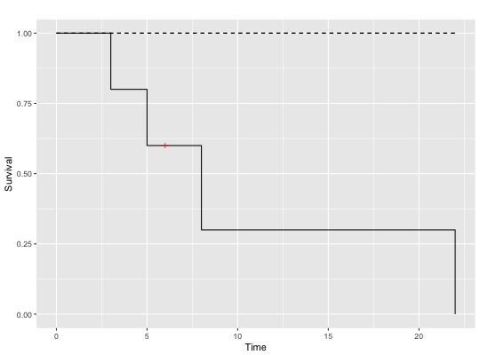

Produce a survival plot of a Kaplan-Meier estimator using ggplot2.
survPlot_gg(s, CI = "def", pltcens = TRUE, survcl = "gg.def",
censcl = "red", lty = 1, ltci = 2, shape = 3, bw = FALSE,
xlab = "Time", ylab = "Survival", main = "")
Arguments
- s
- Survival model object, generated by methods like Kaplan-Meier.
- CI
- Type of confidence interval for the survival object.
- pltcens
- Should the plot include the censored values?
- survcl
- Color for observations with outcomes of "survived".
- censcl
- Color for observations with outcomes of "censored".
- lty
- The number of survival curves to be generated from the model.
- ltci
- The number of lines to be generated for confidence intervals.
- shape
- The shapes of points plotted, passed to
geom_point
- bw
- Boolean for desired background color in plots (black/white).
- xlab
- A label for the x-axis, defaults to "Time".
- ylab
- A label for the y-axis, defaults to "Survival".
- main
- A main label for the survival plot, no default.
Examples
library(survival)
time <- c(5,6,8,3,22)
age <- c(46,35,30,30,36)
drug <- c(0,1,1,1,0)
censor <- c(1,0,1,1,1)
survdat <- as.data.frame(cbind(time, age, drug, censor))
s <- survfit(Surv(survdat$time, survdat$censor) ~ 1, conf.type="none")
survPlot_gg(s)
